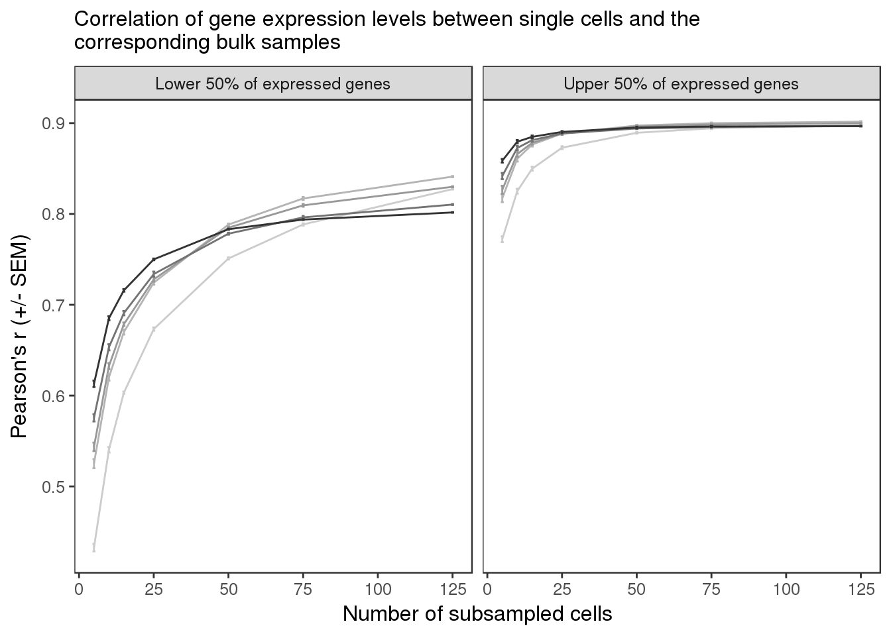

Last updated: 2017-02-08
Code version: e1541e9
A subsample of the full data, post mapping, was processed to create the count data used here.
A bit more information on the development of this sample data would be usefull It appears to be annotated beyond raw count data.
library("dplyr")
library("tidyr")
library("ggplot2")
library("cowplot")
theme_set(theme_bw(base_size = 12))
theme_update(panel.grid.minor.x = element_blank(),
panel.grid.minor.y = element_blank(),
panel.grid.major.x = element_blank(),
panel.grid.major.y = element_blank(),
legend.key = element_blank(),
plot.title = element_text(size = rel(1)))d <- read.table("../../singleCellSeq/data/subsampling-results.txt",
header = TRUE, sep = "\t", stringsAsFactors = FALSE)
str(d)'data.frame': 6240 obs. of 25 variables:
$ type : chr "reads" "molecules" "reads" "molecules" ...
$ depth : int 50000 50000 50000 50000 50000 50000 250000 250000 250000 250000 ...
$ gene_subset : chr "all" "all" "lower" "lower" ...
$ seed : int 1 1 1 1 1 1 1 1 1 1 ...
$ subsampled_cells: int 5 5 5 5 5 5 5 5 5 5 ...
$ individual : chr "NA19098" "NA19098" "NA19098" "NA19098" ...
$ replicate : logi NA NA NA NA NA NA ...
$ lower_q : num 0 0 0 0 0.5 0.5 0 0 0 0 ...
$ upper_q : num 1 1 0.5 0.5 1 1 1 1 0.5 0.5 ...
$ available_ensg : int 12192 12192 12192 12192 12192 12192 12192 12192 12192 12192 ...
$ used_ensg : int 12192 12192 6096 6096 6096 6096 12192 12192 6096 6096 ...
$ available_ercc : int 43 43 43 43 43 43 43 43 43 43 ...
$ used_ercc : int 43 43 22 22 22 22 43 43 22 22 ...
$ potential_cells : int 142 142 142 142 142 142 142 142 142 142 ...
$ available_cells : int 142 142 142 142 142 142 142 142 142 142 ...
$ pearson_ensg : num 0.774 0.79 0.368 0.372 0.727 ...
$ pearson_ercc : num 0.893 0.907 0.456 0.406 0.914 ...
$ spearman_ensg : num 0.772 0.79 0.405 0.411 0.703 ...
$ spearman_ercc : num 0.854 0.853 0.456 0.383 0.955 ...
$ detected_ensg : int 7972 7972 2413 2413 5559 5559 9493 9493 3550 3550 ...
$ detected_ercc : int 29 29 10 10 20 20 35 35 14 14 ...
$ mean_counts_ensg: num 22471 12126 1292 738 21180 ...
$ mean_counts_ercc: num 568.8 269 8.2 3.2 561.4 ...
$ var_pearson : num 0.804 0.846 0.4 0.455 0.76 ...
$ var_spearman : num 0.762 0.792 0.451 0.467 0.693 ...d_grouped <- d %>%
group_by(type, depth, gene_subset, subsampled_cells,
individual, potential_cells, available_cells,
lower_q, upper_q, available_ensg, used_ensg,
available_ercc, used_ercc) %>%
summarize(mean_detected = mean(detected_ensg),
sem_detected = sd(detected_ensg) / sqrt(length(detected_ensg)),
mean_bulk = mean(pearson_ensg),
sem_bulk = sd(pearson_ensg) / sqrt(length(pearson_ensg)),
mean_var = mean(var_pearson),
sem_var = sd(var_pearson) / sqrt(length(var_pearson)))d_filter <- d_grouped %>% filter(individual == "NA19239",
type == "molecules",
gene_subset %in% c("lower", "upper"))
d_filter$gene_subset <- factor(d_filter$gene_subset,
levels = c("lower", "upper"),
labels = c("Lower 50% of expressed genes",
"Upper 50% of expressed genes"))plot_bulk_title <- "Correlation of gene expression levels \n between single cells and the corresponding bulk samples"
plot_bulk_title <- "Correlation of gene expression levels between single cells and the corresponding bulk samples"
plot_bulk <- ggplot(d_filter,
aes(x = subsampled_cells, y = mean_bulk,
color = as.factor(depth))) +
geom_line() +
geom_errorbar(aes(ymin = mean_bulk - sem_bulk,
ymax = mean_bulk + sem_bulk),
width = 1) +
facet_wrap(~gene_subset) +
scale_color_grey(start = 0.8, end = 0.2, name = "Sequencing depth") +
theme(legend.position = "none") +
labs(x = "Number of subsampled cells",
y = "Pearson's r (+/- SEM)",
title = paste(strwrap(plot_bulk_title, width = 80), collapse = "\n"))
plot_bulk This is comparing a subset of the single cells to the bulk samples. We are looking at the the correlation as a function of how many of the sampled cells the gene was found in. This uses molecule counts from individual NA19239.
This site was created with R Markdown